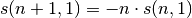

Some utilities¶
- ecolopy_dev.utils.generate_random_neutral_abundance(model_name, size, **kwargs)[source]¶
Parameters: - model_name – model name (ewens, etienne, lognorm)
- size – size of the community (J), if log-normal distribution size should be equal to number of species (S)
Returns: random neutral distribution of abundance
other args should be of kind theta, I, m
Example:
import ecolopy_dev ecolopy.generate_random_neutral_abundance('ewens', 100, theta=12, I=12)
- ecolopy_dev.utils.shannon_entropy(abund, inds)[source]¶
computes Shannon entropy (H) for a given abundance table and number of individuals.
Parameters: abund – distribution of abundances as list Returns: Shannon entropy
- ecolopy_dev.utils.draw_contour_likelihood(abd, model=None, theta_range=None, m_range=None, num_dots=100, local_optima=True, write_lnl=False)[source]¶
Draw contour plot of the log likelihood of a given abundance to fit Etienne model.
Parameters: - abd – Community object
- model (None) – model name, if None current model is used
- theta_range (None) – minimum and maximum value of theta as list. If None, goes from 1 to number of species (S)
- m_range (None) – minimum and maximum value of m as list. If None, goes from 0 to 1
- num_dots (100) – Number of dots to paint
- local_optima (True) – display all local optima founds as white cross
- write_lnl (False) – allow to write likelihood values manually by left click on the contour plot.
- ecolopy_dev.utils.draw_shannon_distrib(neut_h, obs_h, outfile=None, filetype=None, size=(15, 15))[source]¶
draws distribution of Shannon values for random neutral
Parameters: - neut_h – list of Shannon entropies corresponding to simulation under neutral model
- obs_h – Shannon entropy of observed distribution of abundance
- outfile (None) – path were image will be saved, if none, plot will be shown using matplotlib GUI
- filetype (None) – pdf or png
- size ((15,15)) – size in inches of the drawing
- ecolopy_dev.utils.fast_etienne_likelihood(mod, params, kda=None, kda_x=None)[source]¶
same as Abundance inner function, but takes advantage of constant m value when varying only theta.
Parameters: - abd – Abundance object
- params – list containing theta and m
- kda_x – precomputed list of exp(kda + ind*immig)
- ecolopy_dev.utils.pre_get_stirlings(max_nm, needed, verbose=True)[source]¶
takes advantage of recurrence function:
and as s(whatever, 0) = 0 :

keep only needed stirling numbers (necessary for large communities)
Parameters: - max_nm – max number of individuals in a species
- needed – list of individuals count in species in our dataset, needed in order to limit the number of stirling numbers kept in memory.
- verbose (True) – displays information about state.
- ecolopy_dev.utils.mul_polyn(polyn_a, polyn_b)[source]¶
computes the product of 2 polynomials, depending of the differences in length of the two polynomials, this function will call one of: * _mul_uneq_polyn: when length of polyn_a is >= length of polyn_b, will iterate over coefficient. * _mul_simil_polyn: in case both polynomials have equal length, will iterate over factors.
to test multiplication of pylnomials try equality of the two functions: mul_uneq_polyn(polyn_a, polyn_b, len_a, len_b) == _mul_simil_polyn(polyn_a, polyn_b, len_a, len_b)
Example:
from ecolopy_dev.utils import mul_polyn # (2 + 3^x + 5x^2) * (x) mul_polyn([2,3,5], [0,1]) # will return: [mpfr('0.0'), mpfr('2.0'), mpfr('3.0'), mpfr('5.0')] # that is: 0 + 2x + 3x^2 + 5x^3
Parameters: - polyn_a – list of indices of polynomial
- polyn_b – list of indices of polynomial (e.g.: [1,3,5,0,2] for )
Returns: a list representing multiplication of the two polynomials